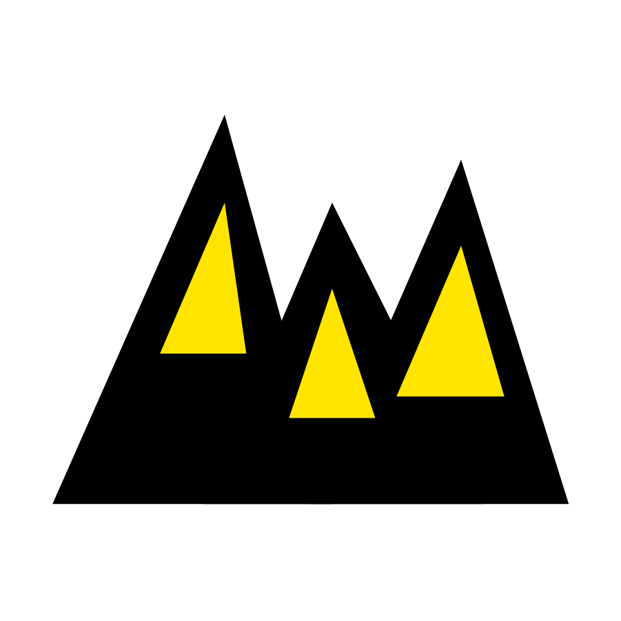
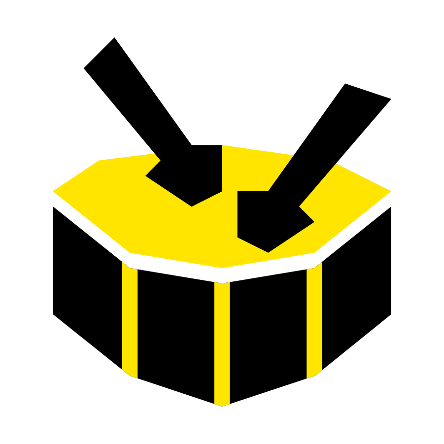

 Territorio e Inversión
0
Beneficiarios
30
Dptos.
|
112
Mpios.
Territorios alcanzados
105
Org. de base fortalecidas
0
Beneficiarios directos
0
Beneficiarios indirectos
0
Beneficiarios público
$0
Inversión total (COP)
Listado de cobertura territorial
Departamentos (30)
Municipios y Ciudades (112)
Haz clic en los clusters para desagregar. Los montos reflejan la inversión en fortalecimiento.
Lo que proponemos entonces...
01.
La Perspectiva
¿Qué organización queremos ver?
-
Sujeto Político Activo
Organizaciones que no solo ejecutan, sino que intervienen y afectan sus contextos territoriales.
-
Autónoma & Sostenible
Menos dependencia gubernamental ("papelitos"), más capacidad de cooperación internacional.
-

Cuidadora hacia adentro y hacia afuera
Que prioriza la salud mental, reconoce los límites y aplica tecnologías del cuidado.
02.
La Ruta
¿Qué necesitan para lograrlo?
Educación Financiera Real
Herramientas para manejar balances, impuestos y gestión de recursos privados/mixtos.
Sistematización (SOPs)

Dejar de reinventar la rueda. Crear manuales de procesos administrativos y metodológicos.
Investigación de su Hacer

Tiempo y recursos para preguntarse por su historia y renovar sus apuestas pedagógicas.